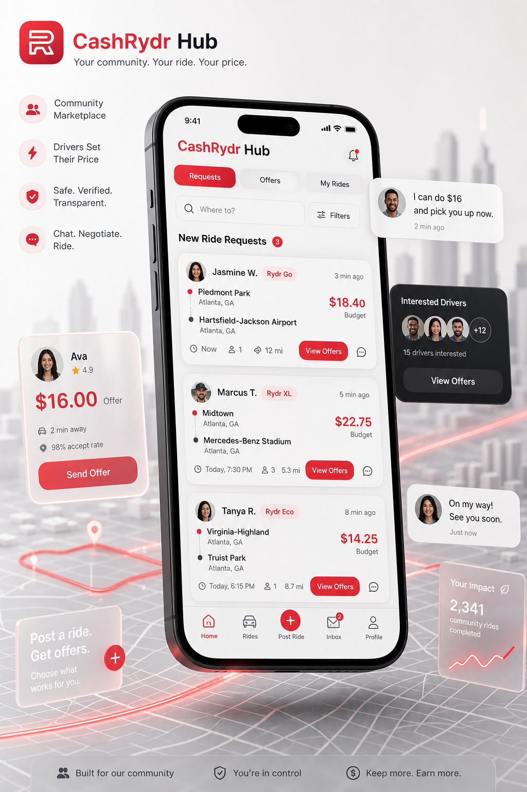
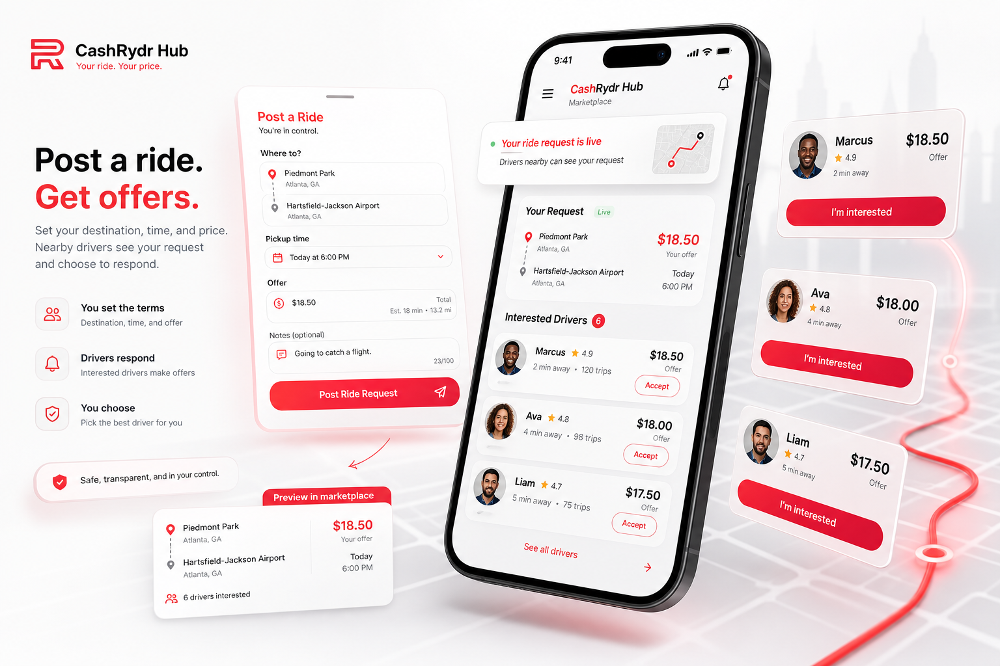
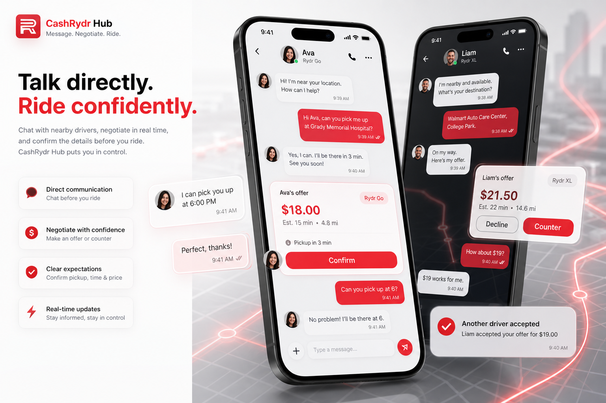
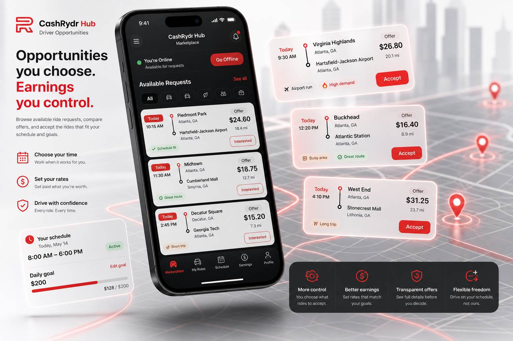

Riders suggest the amount they're willing to pay.
CashRydr Hub
Transportation, Your Way.
CashRydr Hub is a community-driven transportation marketplace that connects riders and drivers beyond traditional ride dispatching. Create a ride request, receive interest from nearby drivers, discuss trip details together, and arrange transportation in a way that works best for everyone involved.

A marketplace inside Rydr
Not dispatched. Discovered.
CashRydr Hub expands transportation beyond the standard request-and-match model. Riders post what they need, drivers decide what makes sense, and both sides can connect before the trip begins.
Rider Experience
Post a Ride. Connect with Drivers.
Getting started is simple. CashRydr Hub has its own quick signup experience, allowing anyone to join the marketplace without creating a full Rydr rider account. Once inside, create a transportation request by choosing your destination, preferred pickup time, and the amount you're willing to offer. Nearby drivers can review your request and decide whether they're interested, giving both sides the opportunity to connect before the trip begins.
Destination
Pickup time
Offer

Request liveDrivers can respond
Interested6 nearby drivers

MessageDiscuss pickup details
Offer updateResponsive marketplace
Conversations
Discuss the Details Together.
CashRydr Hub encourages direct communication between riders and drivers before a trip begins. Once a driver expresses interest, both parties can discuss trip details, pickup expectations, and pricing adjustments when appropriate. Because requests are visible to multiple drivers, another driver may accept the original offer before negotiations conclude, creating a dynamic marketplace where responsiveness matters.
Message before the ride
Clarify expectations
Adjust when appropriate
Respond quickly
Driver Experience
Choose Opportunities That Make Sense for You.
Drivers browse available ride requests and decide which opportunities fit their schedule and earning goals. CashRydr Hub requests are completely separate from dispatched Rydr rides and do not affect driver performance metrics such as acceptance rate, cancellation history, or overall driver standing within the Rydr platform.
Browse requests
Choose what fits
Separate from dispatched rides
No acceptance-rate impact

Available requestsChoose your opportunity
Marketplace Expectations
Designed for flexibility, clarity, and respectful participation.
Drivers decide which requests interest them.
Discuss trip details before confirming.
Submit requests at least two hours before pickup so drivers have time to respond.
Payments are arranged directly between riders and drivers.
Respectful communication helps maintain a healthy marketplace.
Community Standards
Supporting a Safe and Respectful Community.
CashRydr Hub is designed to help riders and drivers connect through a trusted marketplace. While transportation arrangements and payments are made directly between participants, Rydr provides community standards, reporting tools, and incident reporting features to help maintain a respectful environment. Reports submitted through the platform may be reviewed internally, and appropriate action may be taken when community standards are violated.
Marketplace experiences work best when expectations are discussed before the trip.
Participants can submit reports for internal review when standards are violated.
Direct arrangements depend on responsible riders and drivers using the marketplace well.
CashRydr Hub access
Join the transportation marketplace.
Request access and choose how you want to participate. CashRydr Hub grows from the same Rydr ecosystem, but it opens a different way for riders and drivers to connect.